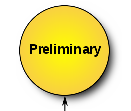
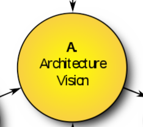
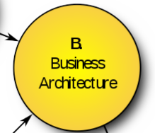
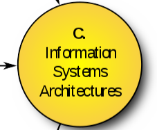
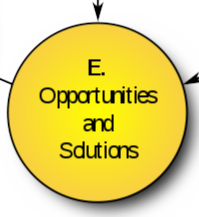
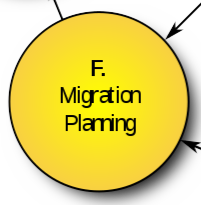
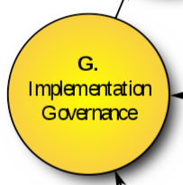

4-Componentes principales de TOGAF
TOGAF es una metodología de gran nivel para planificar con cuatro etapas: Negocio, Aplicación, Datos y Tecnología.
Cuenta con 8 etapas con el enfoque del marco TOGAF de la siguiente manera:
Fase Preliminar: Marco y Principios: Esta fase explica la preparación de la gestión hospitalaria con el objetivo de asegurar el compromiso de apoyar la implementación de la Gobernanza de TI.

Fase A: Visión de la arquitectura: en esta fase se explican los compromisos de gestión de las actividades de validación relacionados con los principios, objetivos y soporte del negocio. En esta etapa también se adoptan las necesidades de gestión relacionadas con la arquitectura, el alcance y las limitaciones de la empresa.

Fase B: Arquitectura de negocio: en esta etapa se describe el plan de negocio de la empresa relacionado con la arquitectura que se adapta al plan de negocio y se explica previamente el estado actual de la arquitectura y la tecnología de soporte.

Fase C: Arquitecturas de Sistemas de Información: en esta fase la dirección explica la arquitectura relacionada con los datos y las aplicaciones que soportan los procesos de negocio de la empresa. Esta arquitectura también explica todos los aspectos relacionados con la arquitectura de aplicaciones y la arquitectura de datos.

Fase D: Arquitectura tecnológica: en esta etapa se explica la arquitectura tecnológica desarrollada de acuerdo con las necesidades actuales y los planes de desarrollo futuros.
Fase E: Oportunidades y Soluciones: esta fase describe las actividades de evaluación del costo de los beneficios, evaluación, medición de los resultados de los logros. En esta etapa también se explica la preparación de una estrategia de migración al nuevo sistema.

Fase F: Planificación de la migración: en esta etapa se explican las actividades de migración del sistema, determinando en el paso inicial la escala de prioridades en función del nivel de importancia de la sección.

Fase G: Gobernanza de la implementación: en esta etapa se explican los detalles de la implementación de la gobernanza, como los contratos arquitectónicos, las recomendaciones para cada proceso y otros.
